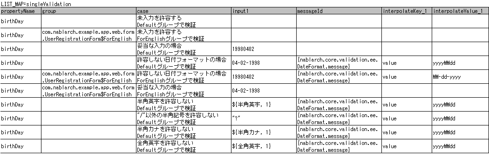
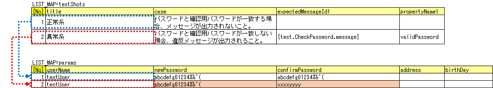
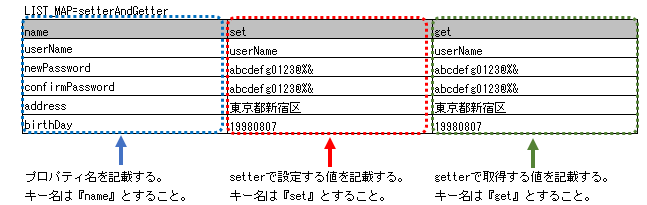
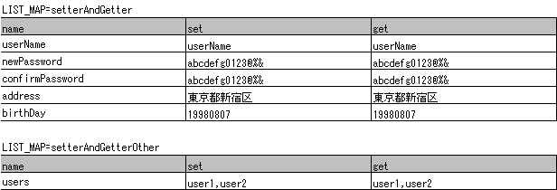

Bean Validationに対応したForm/Entityのクラス単体テスト¶
本項では、入力値チェックを Bean Validation で実施しているFormおよびEntityクラス単体テスト(以下Form単体テストまたはEntity単体テスト)について説明する。 両者はほぼ同じように単体テストを行えるため、共通する内容についてはForm単体テストをベースに説明し、特有の処理については個別に説明する。
補足
Form、Entityの責務については、各処理方式の責務配置を参照すること。 例： ウェブアプリケーションの責務配置 、 Nablarchバッチアプリケーションの責務配置
Form/Entity単体テストの書き方¶
本項で例として使用したテストクラスとテストデータは以下のとおり(右クリック->保存でダウンロード)。
テストクラス(UserRegistrationFormTest.java)テストデータ(UserRegistrationFormTest.xlsx)テスト対象クラス(UserRegistrationForm.java)
テストデータの作成¶
テストデータを記載したExcelファイルそのものの作成方法を説明する。テストデータを記載したExcelファイルは、テストソースコードと同じディレクトリに同じ名前で格納する(拡張子のみ異なる)。 なお、後述する 精査のテストケース 、setter、getterに対するテストケースのそれぞれが、1シートずつ使用する前提である。
テストデータの記述方法詳細については、 自動テストフレームワーク 、 データベースを使用するクラスのテスト を参照。
なお、メッセージデータやコードマスタなどの、データベースに格納する静的マスタデータは、プロジェクトで管理されたデータがあらかじめ投入されている (これらのデータを個別のテストデータとして作成しない)前提である。
テストクラスの作成¶
Form/Entity単体テストのテストクラスは、以下の条件を満たすように作成する。
- テストクラスのパッケージは、テスト対象のForm/Entityと同じとする。
- <Form/Entityクラス名>Testというクラス名でテストクラスを作成する。
- nablarch.test.core.db.EntityTestSupportを継承する。
package com.nablarch.example.app.web.form; // 【説明】パッケージはUserRegistrationFormと同じ
import nablarch.test.core.db.EntityTestSupport;
import org.junit.Test;
/**
* {@link UserRegistrationForm}に対するテストを実行するクラス。
* テスト内容はExcelシート参照のこと。
*
* @author Takayuki Uchida
* @since 1.0
*/
public class UserRegistrationFormTest extends EntityTestSupport {
// 【説明】クラス名はUserRegistrationFormTestで、EntityTestSupportを継承する
// 【説明】〜後略〜
テストメソッドの記述方法は本項以降に記載されているコード例を参照。
文字種と文字列長の単項目精査テストケース¶
単項目精査に関するテストケースは、入力される文字種および文字列長に関するものがほとんどである。例えば、以下のようなプロパティがあるとする。
- プロパティ名「フリガナ」
- 最大文字列長は50文字
- 必須項目
- 全角カタカナのみを許容する
この場合、以下のようなテストケースを作成することになる。
ケース 観点 全角カタカナ50文字を入力し精査が成功する。 最大文字列長、文字種の確認 全角カタカナ51文字を入力し精査が失敗する。 最大文字列長の確認 全角カタカナ1文字を入力し精査が成功する。 最小文字列長、文字種の確認 空文字を入力し、精査が失敗する。 必須精査の確認 半角カタカナを入力し精査が失敗する。 文字種の確認[1]
[1] 同様に、半角英字、全角ひらがな、漢字...等が入力され精査が失敗するケースが必要である。
このように、単項目精査のテストケースは、ケース数が多くなりデータ作成の労力がかかる。そこで、単項目精査テスト専用のテスト方法を提供する。これにより以下の効果が見込まれる。
- 単項目精査のテストケース作成が容易になる。
- 保守性の高いテストデータが作成でき、レビューやメンテナンスが容易になる。
補足
本テスト方法は、プロパティとして別のFormを保持するFormに対しては使用できない。その場合、独自に精査処理のテストを実装すること。 プロパティとして別のFormを保持するFormとは、以下の形式でプロパティにアクセスする親Formのこと。
<親Form>.<子Form>.<子フォームのプロパティ名>
テストケース表の作成方法¶
以下のカラムを用意する。
| カラム名 | 記載内容 |
|---|---|
| propertyName | テスト対象のプロパティ名 |
| allowEmpty | そのプロパティが未入力を許容するか |
| group | Bean Validationのグループ（省略可） [2] |
| min | そのプロパティが入力値として許容する最小文字列長（ 省略可） |
| max | そのプロパティが入力値として許容する最大文字列長（ 省略可） |
| messageIdWhenEmptyInput | 未入力時に期待するメッセージ（省略可）[3] |
| messageIdWhenInvalidLength | 文字列長不適合時に期待するメッセージ（省略可）[4] |
| messageIdWhenNotApplicable | 文字種不適合時に期待するメッセージ |
| interpolateKey_n | 埋め込み文字のキー名（nは1からの連番、省略可 ） [5] |
| interpolateValue_n | 埋め込み文字の値（nは1からの連番、省略可） |
| 半角英字 | 半角英字を許容するか |
| 半角数字 | 半角数字を許容するか |
| 半角記号 | 半角記号を許容するか |
| 半角カナ | 半角カナを許容するか |
| 全角英字 | 全角英字を許容するか |
| 全角数字 | 全角数字を許容するか |
| 全角ひらがな | 全角ひらがなを許容するか |
| 全角カタカナ | 全角カタカナを許容するか |
| 全角漢字 | 全角漢字を許容するか |
| 全角記号その他 | 全角記号その他を許容するか |
| 外字 | 外字を許容するか |
| [2] | Bean Validationのグループには、グループに指定するクラスをFQCNで指定する。
内部クラスを指定する場合は、クラスを $ で区切ること。 |
| [3] | messageIdWhenEmptyInputを省略した場合は、 自動テストフレームワーク設定値 で設定したemptyInputMessageId の値が使用される。 |
| [4] | messageIdWhenInvalidLengthを省略した場合は、 自動テストフレームワーク設定値 で 設定したデフォルト値が使用される。省略時にどのデフォルト値が使用されるかは、max欄及びmin欄の記載によって決まり、以下の通り。 |
| max欄の記載 | min欄の記載 | maxとminの比較 | 省略時に使用されるデフォルト値 |
|---|---|---|---|
| あり | なし | (該当なし) | maxMessageId |
| あり | あり | max > min | maxAndMinMessageId（超過時）、underLimitMessageId（不足時） |
| あり | あり | max = min | fixLengthMessageId |
| なし | あり | (該当なし) | minMessageId |
| [5] | 埋め込み文字 がある場合は、interpolateKey_1 及び interpolateValue_1 のカラムを追加し、 interpolateKey_1 には埋め込み文字のキー名を、 interpolateValue_1 には埋め込み文字の値を、それぞれ記載する。 埋め込み文字が複数存在する場合は、interpolateKey_2, interpolateValue_2のようにカラムを増やす。 |
許容するかどうかを記入するカラムには、以下の値を設定する。
| 設定内容 | 設定値 | 備考 |
|---|---|---|
| 許容する | o | 半角英小文字のオー |
| 許容しない | x | 半角英小文字のエックス |
メッセージを指定するカラムには、精査エラー時に期待するメッセージを記載する。
メッセージ内の {} で囲まれた部分は、 埋め込み文字を使用する の埋め込み文字であると見なされる。
メッセージ全体を {} で囲んだ場合は、メッセージIDと見なされ、 メッセージ管理 で解決される。
以下、メッセージの指定方法の例を記載する。
| 記載例 | 説明 |
|---|---|
| 入力必須です。 | メッセージをそのまま記載した場合（埋め込み文字なし） |
| {min}文字以上{max}文字以下で入力してください。 | メッセージをそのまま記載した場合（埋め込み文字あり） |
| {nablarch.core.validation.ee.SystemChar.message} | メッセージIDとしてメッセージを記載した場合 |
具体例を以下に示す。

テストメソッドの作成方法¶
スーパクラスの以下のメソッドを起動する。
void testValidateCharsetAndLength(Class entityClass, String sheetName, String id)
// 【説明】〜前略〜
public class UserRegistrationFormTest extends EntityTestSupport {
/**
* テスト対象Formクラス。
*/
private static final Class<?> TARGET_CLASS = UserRegistrationForm.class;
/**
* 文字種および文字列長の単項目精査テストケース
*/
@Test
public void testCharsetAndLength() {
// 【説明】テストデータを記載したシート名
String sheetName = "testCharsetAndLength";
// 【説明】テストデータのID
String id = "charsetAndLength";
// 【説明】テスト実行
testValidateCharsetAndLength(TARGET_CLASS, sheetName, id);
}
// 【説明】〜後略〜
このメソッドを実行すると、テストデータの各行毎に以下の観点でテストが実行される。
| 観点 | 入力値 | 備考 |
|---|---|---|
| 文字種 | 半角英字 | max(最大文字列長)欄に記載した長さの文字列で
構成される。
max欄が省略された場合は、min（最小文字列長）欄に
記載した長さの文字列で構成される。
max欄、min欄ともに省略された場合は、
長さ1の文字列で構成される。
|
| 文字種 | 半角数字 | |
| 文字種 | 半角数字 | |
| 文字種 | 半角記号 | |
| 文字種 | 半角カナ | |
| 文字種 | 全角英字 | |
| 文字種 | 全角数字 | |
| 文字種 | 全角ひらがな | |
| 文字種 | 全角カタカナ | |
| 文字種 | 全角漢字 | |
| 文字種 | 全角記号その他 | |
| 文字種 | 外字 | |
| 未入力 | 空文字 | 長さ0の文字列
|
| 最小文字列 | 最小文字列長の文字列 | 入力値は、o印を付けた文字種で構成される。
max欄が省略された場合は、
最長文字列・文字列長超過のテストは実行されない。
min欄が省略された場合は、
文字列長不足のテストは実行されない。
|
| 最長文字列 | 最長文字列長の文字列 | |
| 文字列長不足 | 最小文字列長－１の文字列 | |
| 文字列長超過 | 最大文字列長＋１の文字列 |
その他の単項目精査のテストケース¶
前述の、文字種と文字列長の単項目精査テストケースを使用すれば大部分の単項目精査がテストできるが、一部の精査についてはカバーできないものもある。 例えば、日付入力項目のフォーマット精査が挙げられる。
このような単項目精査のテストについても、簡易にテストできる仕組みを用意している。 各プロパティについて、１つの入力値と期待するメッセージIDのペアを記述することで、 任意の値で単項目精査のテストができる。
補足
本テスト方法は、プロパティとして別のFormを保持するFormに対しては使用できない。その場合は、独自に精査処理のテストを実装すること。 プロパティとして別のFormを保持するFormとは、以下の形式でプロパティにアクセスする親Formのこと。
<親Form>.<子Form>.<子フォームのプロパティ名>
テストケース表の作成方法¶
以下のカラムを用意する。
| カラム名 | 記載内容 |
|---|---|
| propertyName | テスト対象のプロパティ名
|
| case | テストケースの簡単な説明
|
| group [6] | Bean Validationのグループ（省略可）
|
| input1[7] | 入力値 [8]
|
| messageId[9] | 上記入力値で単項目精査した場合に、発生すると期待す
るメッセージ
（精査エラーにならないことを期待する場合は空欄）
|
| interpolateKey_n | 埋め込み文字のキー名（nは1からの連番、省略可
）
|
| interpolateValue_n | 埋め込み文字の値（nは1からの連番、省略可）
|
| [6] | グループの指定方法は、 文字種と文字列長の単項目精査テストケースの作成方法 に記載の方法と同じである。 |
| [7] | ひとつのキーに対して複数のパラメータを指定する場合は、input2, input3 というようにカラムを増やす。 |
| [8] | セルへの特殊な記述方法 の記法を使用することで、効率的に入力値を作成できる。 |
| [9] | メッセージの指定方法は、 文字種と文字列長の単項目精査テストケースの作成方法 に記載の方法と同じである。 |
具体例を以下に示す。
{kind=link}
テストメソッドの作成方法¶
スーパクラスの以下のメソッドを起動する。
void testSingleValidation(Class entityClass, String sheetName, String id)
// 【説明】〜前略〜
public class UserRegistrationFormTest extends EntityTestSupport {
/**
* テスト対象Formクラス。
*/
private static final Class<?> TARGET_CLASS = UserRegistrationForm.class;
// 【説明】〜中略〜
/**
* 単項目精査のテストケース（上記以外）
*/
@Test
public void testSingleValidation() {
// 【説明】テストデータを記載したシート名
String sheetName = "testSingleValidation";
// 【説明】テストデータのID
String id = "singleValidation";
// 【説明】テスト実行
testSingleValidation(TARGET_CLASS, sheetName, id);
}
// 【説明】〜後略〜
項目間精査のテストケース¶
上記までの単項目精査でテストできないような、 @AssertTrue を指定した項目間精査などは、別途テストを作成する必要がある。
テストケース表の作成¶
- IDは”testShots”固定とする。
- 以下のカラムを用意する。
カラム名 記載内容 title description group [10] expectedMessageIdn [11] propertyNamen interpolateKeyn_k [12] interpolateValuen_k
| [10] | グループの指定方法は、 文字種と文字列長の単項目精査テストケースの作成方法 に記載の方法と同じである。 |
| [11] | メッセージの指定方法は、 文字種と文字列長の単項目精査テストケースの作成方法 に記載の方法と同じである。複数のメッセージを期待する場合、expectedMessageId2, propertyName2というように数値を増やして右側に追加していく。 |
| [12] | 複数のメッセージに対応する埋め込み文字が存在する場合は、同様にinterpolateKey2_1, interpolateValue2_1, interpolateKey2_2, interpolateValue2_2のように数値を増やして右側に追加していく。 |
精査エラーが発生するプロパティ名と、そのプロパティの精査エラーメッセージを記載する。精査エラーが発生しないプロパティは記載しない。
- 入力パラメータ表の作成
- IDは”params”固定とする。
- 上記のテストケース表に対応する、入力パラメータ[13] を1行ずつ記載する。
[13] セルへの特殊な記述方法 の記法を使用することで、効率的に入力値を作成できる。
入力パラメータ表には、項目間精査で検証したいプロパティの値を記載する。 項目間精査で検証したいプロパティ以外に、入力必須のプロパティが存在する場合は、それも記載する必要がある。
具体例を以下に示す。 下図では、”newPasswordとconfirmPasswordが等しいか否か”を検証するプロパティ（validPassword）に対するケースを作成している。

{kind=link}
補足
Form単体テストのテストケースやテストデータを作成する際、プロパティに保持している別のFormのプロパティ を指定したいことがある。この場合、次のように指定できる。
- Formのコード例
public class SampleForm {
/** システムユーザ */
private SystemUserEntity systemUser;
/** 電話番号配列 */
private UserTelEntity[] userTelArray;
// 【説明】プロパティ以外は省略
}
- 保持しているFormのプロパティを指定する方法(SystemUserEntity.userIdを指定する場合)
sampleForm.systemUser.userId
- Form配列の要素のプロパティを指定する方法(UserTelEntity配列の先頭要素のプロパティを指定する場合)
sampleForm.userTelArray[0].telNoArea
テストメソッドの作成方法¶
スーパクラスの以下のメソッドを起動する。
void testBeanValidation(Class entityClass, String sheetName)
// 【説明】〜前略〜
public class UserRegistrationFormTest extends EntityTestSupport {
/**
* テスト対象Formクラス。
*/
private static final Class<?> TARGET_CLASS = UserRegistrationForm.class;
// 【説明】〜中略〜
/**
* 項目間精査のテストケース
*/
@Test
public void testWholeFormValidation() {
// 【説明】テストデータを記載したシート名
String sheetName = "testWholeFormValidation";
// 【説明】テスト実行
testBeanValidation(TARGET_CLASS, sheetName);
}
// 【説明】〜後略〜
setter、getterに対するテストケース¶
setter、getterに対するテストでは、setterで設定した値とgetterで取得した値が、期待通りになっているか確認するケースを作成する。このとき対象となるプロパティは、Formに定義されている全てのプロパティである。
各プロパティに対して、setterに渡すためのデータと期待値(getterで取得した値と比較するデータ)を用意する。 テストメソッドでは、前述のsetterに渡すためのデータを引数にsetterを呼び出し、直後にgetterで取得した値と期待値が等しいことを確認している。
実際のテストコードでは、setterへの値の設定及び値の確認(期待値との比較)は、 自動テストフレームワークで提供されるメソッド内で行われる。 詳細は、テストコード を参照すること。
補足
Entityは自動生成されるため、アプリケーションで使用されないsetter/getterが生成される可能性がある。その場合リクエスト単体テストではテストできないため、Entity単体テストでsetter/getterに対するテストを必ず行うこと。
一方、一般的なFormの場合、アプリケーションで使用するsetter/getterのみを作成する。したがって、リクエスト単体テストでsetter/getterのテストを行うことができる。そのため、一般的なFormについては、クラス単体テストでsetter/getterのテストを行う必要はない。
Excelへの定義¶
{kind=link}
このデータを使用するテストメソッドを以下に示す。
// 【説明】～前略～
public class UserRegistrationFormTest extends EntityTestSupport {
/**
* テスト対象Formクラス。
*/
private static final Class<?> TARGET_CLASS = UserRegistrationForm.class;
// 【説明】〜中略〜
/**
* setter、getterのテストケース
*/
@Test
public void testSetterAndGetter() {
String sheetName = "testSetterAndGetter";
String id = "setterAndGetter";
testSetterAndGetter(TARGET_CLASS, sheetName, id);
}
}
補足
testSetterAndGetterでテスト可能なプロパティの型(クラス)には制限がある。 下記型(クラス)に該当しない場合には、各テストクラスにてsetterとgetterを明示的に呼び出してテストする必要がある。
- String及び、String配列
- BigDecimal及び、BigDecimal配列
- java.util.Date及び、java.util.Date配列(Excelへはyyyy-MM-dd形式もしくはyyyy-MM-dd HH:mm:ss形式で記述すること)
- valueOf(String)メソッドを持つクラス及び、その配列クラス(例えばIntegerやLong、java.sql.Dateやjava.sql.Timestampなど)
以下に、個別のテスト実施方法の例を示す。
この例では、Formが List<String> 型のプロパティ users を持っているとしている。
Excelへのデータ記述例
テストコード例
/** setter/getterのテスト */ @Test public void testSetterAndGetter() { // 【説明】 // 共通にテストが実施出来る項目は、testSetterAndGetterを使用してテストを実施する。 Class<?> entityClass = UserRegistrationForm.class; String sheetName = "testSetterAndGetter"; String id = "setterAndGetter"; testSetterAndGetter(entityClass, sheetName, id); // 【説明】 // 共通にテストが実施出来ない項目は、個別にテストを実施する。 // 【説明】 // getParamMapを呼び出し、個別にテストを行うプロパティのテストデータを取得する。 // (テスト対象のプロパティが複数ある場合は、getListParamMapを使用する。) Map<String, String[]> data = getParamMap(sheetName, "setterAndGetterOther"); // 【説明】String[]から、Formのsetterの引数であるList<String>へ変換する List<String> users = Arrays.asList(data.get("set")); // 【説明】デフォルトコンストラクタを生成し、setterで値を設定する。 UserRegistrationForm form = new UserRegistrationForm(); form.setUsers(users); // 【説明】getterを呼び出し、期待値通りの値が返却されることを確認する。 assertEquals(form.getUsers(), Arrays.asList(data.get("get"))); }
{kind=link}
補足
setterやgetterにロジックを記述した場合(例えば、setterは郵便番号上3桁と下4桁に別れているが、getterはまとめて7桁取得する場合など)は、 そのロジックを確認するテストケースを作成すること。
上記のテストをExcelに定義する場合には、下記画像のように定義する。:
郵便番号に下記を設定した場合に、正しく7桁の郵便番号(0010001)が取得することを確認する例
郵便番号上3桁:001
郵便番号下4桁:0001
{kind=link}
自動テストフレームワーク設定値¶
精査のテストケースを実施する際に必要な初期値設定について説明する。
設定項目一覧¶
nablarch.test.core.entity.EntityTestConfigurationクラスを使用し、以下の値をコンポーネント設定ファイルで設定する。
| 設定項目名 | 説明 |
|---|---|
| maxMessageId | 最大文字列長超過時のメッセージのデフォルト値 |
| maxAndMinMessageId | 最長最小文字列長範囲外のメッセージのデフォルト値(可変長、超過時) |
| underLimitMessageId | 最長最小文字列長範囲外のメッセージのデフォルト値(可変長、不足時) |
| fixLengthMessageId | 最長最小文字列長範囲外のメッセージのデフォルト値(固定長) |
| minMessageId | 文字列長不足時のメッセージのデフォルト値 [14] |
| emptyInputMessageId | 未入力時のメッセージのデフォルト値 |
| characterGenerator | 文字列生成クラス [15] |
| validationTestStrategy | テスト用バリデーションストラテジ [16] |
| [14] | 文字種と文字列長の単項目精査テストケース で、maxを省略したテストケースを作成する場合は指定必須。 |
| [15] | nablarch.test.core.util.generator.CharacterGeneratorの実装クラスを指定する。
このクラスがテスト用の入力値を生成する。
通常は、nablarch.test.core.util.generator.BasicJapaneseCharacterGeneratorを使用すれば良い。 |
| [16] | Bean Validationを使用する場合は、 nablarch.test.core.entity.BeanValidationTestStrategyを固定で指定する。 |
コンポーネント設定ファイルの記述例¶
テスト用コンポーネント設定ファイル記述例を示す。
<!-- エンティティテスト設定 -->
<component name="entityTestConfiguration" class="nablarch.test.core.entity.EntityTestConfiguration">
<property name="maxMessageId" value="{nablarch.core.validation.ee.Length.max.message}"/>
<property name="maxAndMinMessageId" value="{nablarch.core.validation.ee.Length.min.max.message}"/>
<property name="fixLengthMessageId" value="{nablarch.core.validation.ee.Length.fixed.message}"/>
<property name="underLimitMessageId" value="{nablarch.core.validation.ee.Length.min.max.message}"/>
<property name="minMessageId" value="{nablarch.core.validation.ee.Length.min.message}"/>
<property name="emptyInputMessageId" value="{nablarch.core.validation.ee.Required.message}"/>
<property name="characterGenerator">
<component name="characterGenerator"
class="nablarch.test.core.util.generator.BasicJapaneseCharacterGenerator"/>
</property>
<property name="validationTestStrategy">
<component class="nablarch.test.core.entity.BeanValidationTestStrategy"/>
</property>
</component>